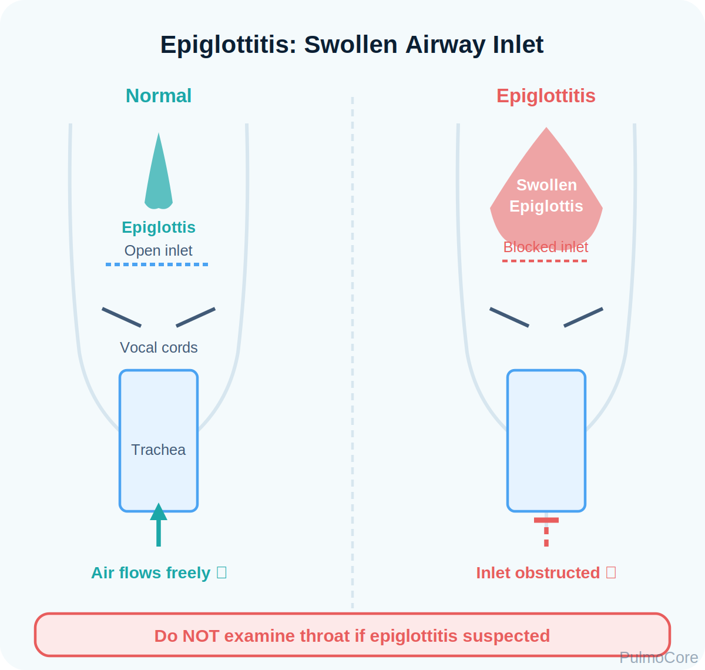
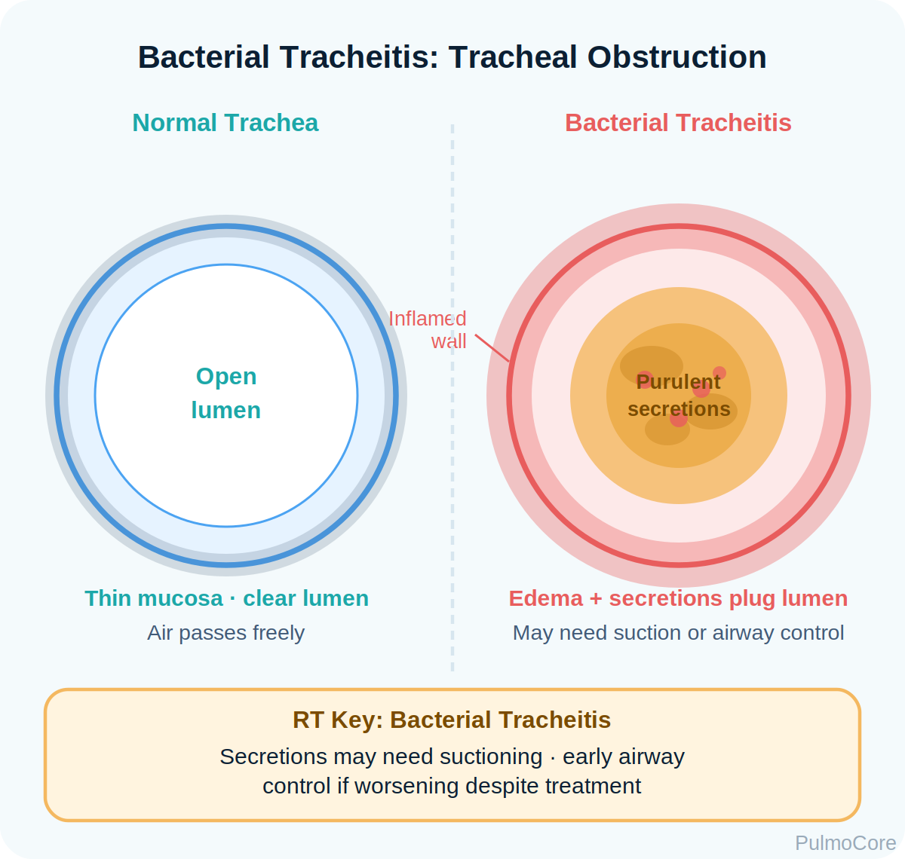
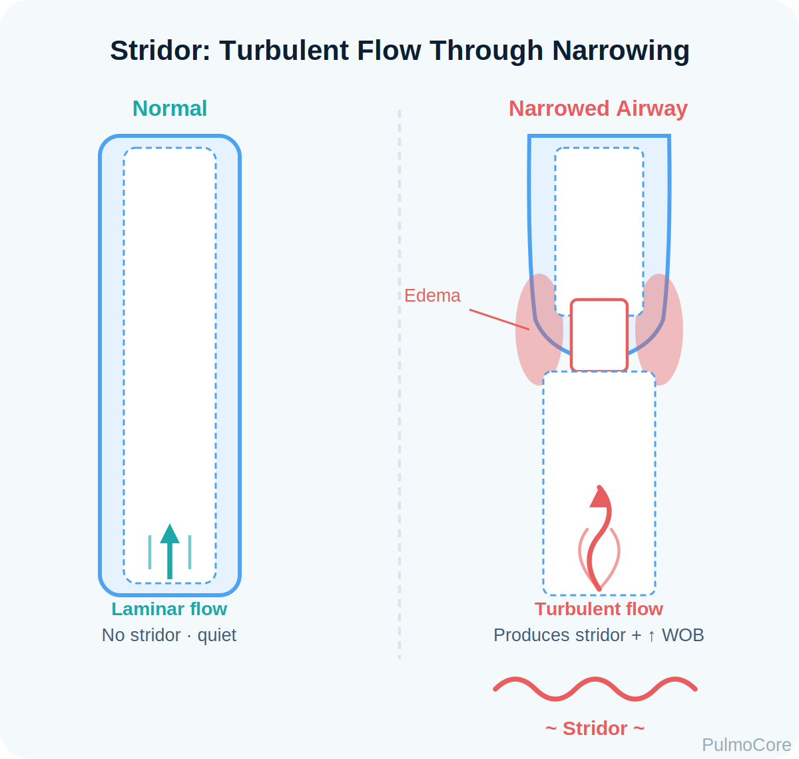

Two life-threatening upper airway infections that can progress rapidly from noisy breathing to complete obstruction. This module focuses on RT recognition, airway protection, diagnostics, escalation, and board-style decision-making.
Category Upper Airway Emergencies
Estimated Time 30–40 minutes
Level Core RT Knowledge
Learning Objectives
By the end of this module, learners should connect infection location, airway narrowing, clinical signs, diagnostic choices, airway risk, and RT escalation priorities.
1. Differentiate the diseases Compare supraglottic obstruction in epiglottitis with subglottic/tracheal obstruction from bacterial tracheitis.
3. Choose safe diagnostics Explain when imaging may help and when airway stabilization takes priority over throat inspection.
4. Prioritize RT action Support oxygenation while avoiding agitation, prepare airway equipment, and escalate early.
Video Overview
2-Minute Epiglottitis Overview
Watch this quick overview before moving into the disease snapshot.
Disease Snapshot
Acute epiglottitis is inflammation and swelling of the epiglottis and supraglottic tissue. Bacterial tracheitis is bacterial infection of the tracheal mucosa with edema and thick purulent secretions. Both can cause rapidly progressive upper airway obstruction.
Epiglottitis location: Supraglottic airway above the vocal cords.
Tracheitis location: Trachea, often below the glottis, with thick secretions.
Key danger: Agitation can worsen obstruction and precipitate complete airway loss.
Airway priority: Do not force throat examination when epiglottitis is suspected.
RT priority: Keep the patient calm, provide oxygen as tolerated, and prepare for advanced airway support.
RT Clinical Connection
The RT must decide whether the patient is maintaining the airway or compensating on the edge of failure. In upper airway emergencies, quiet positioning, minimal stimulation, humidified oxygen, suction readiness, and early airway team activation matter more than completing a routine respiratory treatment checklist.
Board Prep Frame
Associate epiglottitis with fever, drooling, dysphagia, muffled voice, tripod posture, and airway emergency. Associate bacterial tracheitis with toxic appearance, stridor, high fever, poor response to croup therapy, and thick purulent secretions that may require suction/airway intervention.
Quick Pre-Check
Start with the safest airway decision
A child has high fever, drooling, muffled voice, tripod position, and inspiratory stridor. What is the safest RT mindset?
Anatomy & Pathophysiology
Both diseases narrow the upper airway, but they do it in different places. Epiglottitis produces swollen supraglottic tissue that can behave like a rapidly closing door. Bacterial tracheitis produces inflamed tracheal mucosa and thick secretions that can obstruct airflow below the glottis.
Bacterial invasion → mucosal inflammation and edema → narrowed upper airway → turbulent airflow/stridor → increased work of breathing → fatigue, hypoxemia, or complete obstruction.

Epiglottitis mechanism: Swollen epiglottis and aryepiglottic folds narrow the airway inlet.

Tracheitis mechanism: Edema plus thick secretions can block the tracheal lumen.

Clinical concept: Stridor is a sign of turbulent flow through a narrowed upper airway.
High-Yield Comparison
Feature
Acute Epiglottitis
Bacterial Tracheitis
Primary site
Epiglottis/supraglottic airway
Trachea/subglottic airway
Key obstruction
Swollen airway inlet
Edema plus thick purulent secretions
Typical clues
Drooling, dysphagia, muffled voice, tripod
Toxic, high fever, stridor, harsh cough, poor croup response
Major RT risk
Agitation or throat exam may trigger complete obstruction
Secretions may require suction and airway control
Danger Sign
A child with stridor at rest, drooling, fatigue, cyanosis, altered mental status, or rapidly worsening retractions should be treated as a potential airway emergency.
Click the Upper Airway Hotspots
Click each hotspot to review how the anatomy drives RT decisions.
Start here: Click all four hotspots to complete this activity.
0 / 4 hotspots reviewed
Clinical Presentation & Differential Clues
RT assessment must separate lower airway wheeze from upper airway stridor and must identify patients who should not be agitated. Ask: Is the sound inspiratory? Is the patient drooling? Can they swallow? Are they toxic? Are secretions obstructing airflow?
Finding
Likely Meaning
RT Action
Drooling and dysphagia
Cannot swallow secretions; epiglottitis concern
Keep upright, avoid oral exam, activate airway team
Inspiratory stridor at rest
Significant upper airway narrowing
Provide oxygen as tolerated, prepare escalation
Toxic appearance with thick secretions
Bacterial tracheitis concern
Prepare suction and possible airway intervention
Barking cough responding to therapy
Croup more likely
Monitor response, reassess for failure signs
Wheezing with prolonged expiration
Lower airway obstruction
Consider bronchodilator pathway if clinically consistent
Sort the Clinical Clues
Choose the best category for each clue, then check your answers.
Drooling + muffled voice + tripod
Thick purulent secretions with toxic appearance
Cyanosis or altered mental status
Refuses to lie down
Poor response to usual croup therapy
Complete the sorting activity to continue.
Diagnostics & Assessment
Diagnostics should never destabilize the airway. The board-style priority is to recognize when the patient needs controlled airway management before imaging or invasive examination.
Diagnostic Tool
Usefulness
Safety Note
Clinical assessment
Often drives immediate action
Do not force supine positioning or oral exam in suspected epiglottitis
Lateral neck radiograph
May show thumb sign in epiglottitis
Only if stable enough
AP/lateral neck or chest imaging
May support tracheitis/croup differential
Do not delay airway stabilization
Direct visualization
Can confirm diagnosis
Should occur in controlled setting with airway expertise
CBC/cultures
Support infectious workup
Secondary to airway safety
ABG/VBG
May show ventilation failure late
Do not agitate an unstable child just to obtain labs
Board Prep Safety Rule
If epiglottitis is suspected, do not use a tongue blade to inspect the throat at bedside. Keep the patient calm, upright, and prepare for controlled airway management.
Red Flags & Escalation Triggers
Upper airway infections can deteriorate suddenly. RTs should escalate before the child becomes exhausted or cyanotic.
Red Flag
Why It Matters
Stridor at rest
Indicates significant airway narrowing
Drooling or inability to swallow
Suggests severe supraglottic swelling
Tripod/sniffing position
Patient is positioning to maintain airway patency
Retractions, fatigue, quieting, or poor air movement
May indicate impending failure
Cyanosis or altered mental status
Late and dangerous signs of hypoxemia/ventilatory failure
Poor response to croup treatment
Raises concern for bacterial tracheitis or alternate diagnosis
Management & Treatment
Management focuses on protecting the airway, minimizing agitation, treating infection, supporting oxygenation, and preparing for definitive airway control if deterioration occurs.
Intervention
Epiglottitis
Bacterial Tracheitis
Positioning
Allow upright position of comfort
Allow position of comfort; monitor WOB
Oxygen
Humidified oxygen as tolerated without agitation
Humidified oxygen; prepare suction
Airway team
Early controlled airway readiness
Possible intubation for obstruction/secretions
Antibiotics
Broad coverage after airway plan initiated
Broad coverage; often necessary
Suction
Use caution; avoid agitation
High-yield because secretions can obstruct
Croup meds
Not the primary solution
Poor response helps distinguish tracheitis
Airway Management Sequence
Select the steps in the best general order for a suspected unstable upper airway infection.
Recognize upper airway emergency signs
Keep patient calm/upright and avoid forced throat exam
Provide humidified oxygen as tolerated
Activate provider/anesthesia/airway team early
Prepare suction, airway equipment, and monitoring
Support controlled airway plan and antibiotic therapy
Complete the sequence activity to continue.
Respiratory Therapist Role
The RT role is centered on airway surveillance, safe oxygen delivery, equipment readiness, suction support, team communication, and avoiding actions that worsen obstruction.
RT Task
What to Assess or Do
Why It Matters
Assess airway sounds
Stridor, voice change, cough quality, air movement
Determines upper vs lower airway problem and urgency
This guided case reveals one clinical stage at a time. Make the safest RT decision before continuing.
Stage 1: Initial Presentation
A 5-year-old arrives sitting forward, drooling, febrile, and anxious. The parent says the child has a sore throat and will not swallow.
RR 34/min
SpO₂ 92% RA
Sound Inspiratory stridor
Decision Question: What is the priority?
Stage 2: Differential Shift
Another child presents with high fever, toxic appearance, stridor, harsh cough, and copious thick secretions. The child did not improve after usual croup therapy.
Decision Question: Which diagnosis should move higher on the list?
Stage 3: Escalation
The child becomes more fatigued. Retractions worsen and air movement sounds quieter.
Decision Question: What should the RT communicate?
Stage 4: Airway Support
The airway team prepares for controlled intubation. The RT is asked what equipment priorities matter most.
Decision Question: Which setup is most appropriate?
Case Wrap-Up
RT Takeaway: In epiglottitis and bacterial tracheitis, airway protection comes before routine diagnostics.
If the patient worsens: quieting, fatigue, altered mental status, cyanosis, or stridor at rest require urgent escalation.
Knowledge Check
Board-Style Practice
Answer each question to complete this activity. Answer choices shuffle each time the lesson opens.
Question 1
Which finding most strongly supports suspected acute epiglottitis?
Question 2
What action should be avoided in suspected epiglottitis?
Question 3
A toxic child has stridor, high fever, harsh cough, thick purulent secretions, and poor response to croup therapy. Which condition is most likely?
Question 4
Which RT action best supports a child with suspected bacterial tracheitis and worsening obstruction?
0 / 4 questions answered
FAQ
Common Upper Airway Questions
What is the simplest way to separate epiglottitis from tracheitis?
Epiglottitis is mainly supraglottic swelling with drooling, dysphagia, muffled voice, and tripod positioning. Bacterial tracheitis is mainly tracheal infection with toxic appearance, stridor, harsh cough, and thick purulent secretions.
Why is throat inspection dangerous in suspected epiglottitis?
Manipulating the airway can increase distress, worsen swelling, or trigger sudden obstruction. Airway evaluation should occur in a controlled setting with skilled airway support available.
Does stridor mean lower-airway wheezing?
No. Stridor is usually an upper airway sound. Lower-airway obstruction more commonly produces expiratory wheezing.
Why can bacterial tracheitis look like severe croup?
Both can cause stridor and cough, but bacterial tracheitis is usually more toxic, has higher fever, thicker secretions, and may respond poorly to usual croup therapy.
What should the RT do first?
Assess airway risk, keep the patient calm and upright, provide oxygen as tolerated, notify the team, and prepare suction and airway support.
Summary & Clinical Pearls
Acute epiglottitis and bacterial tracheitis are high-risk upper airway infections. Epiglottitis threatens the supraglottic airway and can worsen with agitation. Bacterial tracheitis threatens the tracheal airway through edema and thick secretions. In both, airway safety comes before routine diagnostics.
Must know: Drooling, muffled voice, tripod position, and stridor are airway emergency clues.
Board pearl: Do not inspect the throat with a tongue blade when epiglottitis is suspected.
RT pearl: Use calm oxygen delivery, prepare suction/BVM, and escalate early.
Common mistake: Do not assume a quieter airway means improvement; it may mean less airflow.
Glossary System
Tooltip, searchable glossary, and mastery deck
Searchable Glossary
Terms are stored once and can power inline tooltips, glossary entries, and flashcards.
Glossary Flashcard Mastery Deck
Click the card to flip it. Use Term → Definition or Definition → Term mode. Mark known cards to move them into the completed pile.